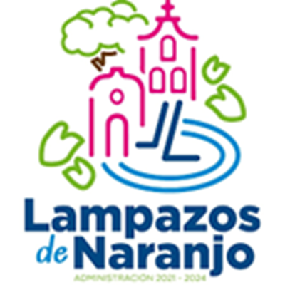
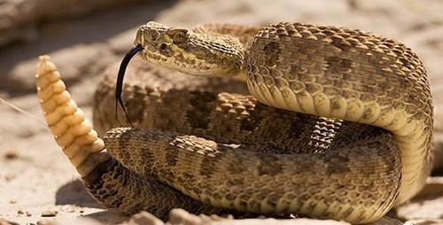
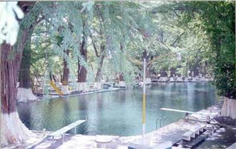

El nombre de Lampazos se debe a la existencia de estas plantas y de Naranjo, en honor al general Francisco Naranjo. Su nombre antiguo fue de pueblo de San Antonio de la Nueva Tlaxcala y misión de Nuestra Señora de los Dolores de la Punta de Lampazos. Fue fundado por Fray Diego de Salazar. El motivo de su fundación fue la evangelización y la importancia de la estrategia militar. Se erigió en villa el 26 de octubre de 1877 y en ciudad el 28 de diciembre del mismo año.
Este municipio del estado de Nuevo León perteneció a las villas fundadas el 12 de noviembre de 1698, por Fray Diego de Salazar, siendo gobernador del Reino don Juan de la Vergara y Mendoza, en terrenos que cedió don Martín de Alarcón, gobernador de la provincia de Coahuila. La sierra de Lampazos cruza el municipio de norte a sur, la Mesa de Catujanes en su límite con Coahuila y el cerro del Carrizal, representan el aspecto montañoso; el resto, es generalmente plano con algunos lomeríos.
Su extensión territorial es de 4,020 kilómetros cuadrados.
En 2020, la población en Lampazos de Naranjo fue de 5,351 habitantes (49.7% hombres y 50.3% mujeres). En comparación a 2010, la población en Lampazos de Naranjo crecía un 0.037%.
En las orillas de las acequias y de los ríos, crece el lampazo, además de mezquites, chaparro prieto, anacahuita y otras especie.
La fauna la integran el venado cola blanca, oso, conejo, víbora de cascabel.

2020
Al iniciarse hoy los trabajos de restauración de la Casa de la Cultura de
Lampazos de Naranjo, se comienza también a vislumbrar para sus lugareños la
recuperación del brillo de ese sitio histórico considerado patrimonio cultural
de la entidad. El Gobierno del Estado y el Consejo para la Cultura y las Artes
de Nuevo León (CONARTE), con el apoyo de la Secretaría de Infraestructura, a
través del Fidecomiso de Patrimonio Cultural, en una acción sin precedentes, da
un paso trascendental en la conservación del patrimonio cultural con el
arranque de las labores para reconstruir la edificación que data de 1906.
De leyendas tenemos “el fantasma del convento” y la hija desheredada que data del siglo XVIII.
Fritada de cabrito, arropado de cabrilla, carne asada, cortadillo, tortillas de harina, capirotada y hojarascas.
A un kilómetro de Lampazos, brota el Ojo de Agua, quizá el más grande en el estado. Está rodeado de gigantescos sabinos y cuenta con asadores para que los visitantes disfruten cómodamente del lugar y del paisaje.

Militar. Participó en la intervención francesa y Reforma.
Militar, bajo las órdenes de Santiago Vidaurri participó en la toma de Monterrey; luego tomó la ciudad de Saltillo. Empuñó las armas en defensa de la Constitución de 1857; combatió contra Miramón en Puerto Carretas, tomó Zacatecas y San Luis. En 1859 sitió la ciudad de Monterrey y, mediante la amenaza de tomarlos, consiguió que se celebraran las elecciones que llevaron a Santiago Vidaurri al poder.
Militar, participó en la toma de Monterrey y en la batalla de Plaza de San Luis, combatió contra los conservadores en Santo Domingo, Comales y Villanueva; también asistió al segundo ataque y tomade Monterrey. Durante la intervención francesa, marchó al interior del país y peleó contra el ejército del imperio en Acultzingo, Tehuacán y Maltrata. Derrotados los franceses, luchó al lado del general Díaz por el Plan de la Noria y Tuxtepec. Fue ministro de guerra y director del ferrocarril nacional mexicano.
Militar, periodista. Participó en la Revolución Mexicana.
Militar destacado del Partido Liberal, combatió la dictadura de Porfirio Díaz. Participó en la campaña de Francisco I. Madero. Ocupó la Presidencia de la Suprema Corte de justicia durante el gobierno de Venustiano Carranza en Veracruz.
Militar. Anti porfirista radical, se adhirió al movimiento maderista en 1910, dirigió la campaña militar contra el general Emiliano Zapata en 1916; candidato a la Presidencia de la República (1919), se reveló contra Carranza, aunque sin reconocer el Plan de Agua Prieta.
Abogado, periodista y escritor. Participó en la política, ocupó una curul en la Cámara de Diputados durante el gobierno de Francisco I. Madero y en 1914 (nombrado por Victoriano Huerta), la Secretaría de Educación Pública y Bellas Artes. Derrotado el régimen de Huerta, se trasladó a San Antonio, Texas, donde publicó en 1919 el periódico Revista Mexicana. Su bibliografía comprende más de 150 fichas.
Periodista. Fue rector de la Universidad de Nuevo León por 15 meses (1962-1963) y catedrático de Historia de México de la Universidad Nacional Autónoma de México (UNAM)Durante muchos años publicó artículos políticos en la revista Siempre y en el periódico Excélsior. Autor de memorias de un Espejo.
Dentro de la música solo tenemos el corrido de lampazos de naranjo por José Medellín.
Entre la comunidad de Lampazos
predomina la religión católica, coexistiendo con otro tipo de creencias
religiosas.